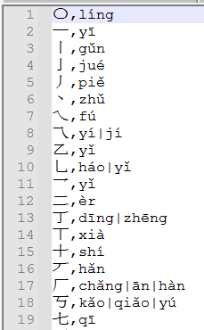

将汉字按照拼音排序
群里有人提出如何将城市名称按照拼音排序，这里是一个解决方案：查字典法。就是我们提前准备（几乎）所有汉字和拼音的字典，使用AI2提供的排序块排序列表。
准备工作
这里我准备了一个字典文件（pinyin.txt），请右键另存到本地，文件来源 https://gitee.com/liqiangit/jpinyin ， 我把内容格式改为了csv格式，并按照笔画顺序排序了。 字典包含了20903个汉字。
文件格式为

加载字典
将上面的字典文件导入项目的素材库中。 我们使用文件管理器读取文件。 读取后将格式转为字典格式。
这样，我们就可以查字典，找到某个汉字的拼音了：
注意这个字典只能查询单个汉字的拼音，如果需要转换多个汉字，需要用循环转换后拼接字串而成。 有些汉字可能有多个读音，这里多个拼音用|进行了分隔。
按映射值排序列表块
在新版的AI2中，引入了多个对列表进行操作的块，其中一个是使用列表项映射的值进行排序：

他的作用是，将列表项转换为一个相应的值，按照这个新的值进行排序，但是返回的是原列表的内容。 比如：
这里，他会把所有数字都除以2求余数，按照余数的大小排序，然后返回每个余数对应的原来的数的列表。
按拼音排序
这里我们将列表项转为拼音，然后让他按照拼音排序，然后返回的还是汉字。
假设我们有一个城市列表：

我们要对这个列表按照拼音顺序排序。
这样，就得到了按照城市名第一个字的拼音排序的列表。
按笔画排序
上面我已经说过，这个字典文件，我已经按照笔画顺序排序了，所以只要找到汉字所在位置的索引，比较索引就可以按笔画顺序排序了。
一点小bug
实际测试会发现有时候“啊”这个读音的会排在最后面，这是因为这个字典文件的拼音字母使用的是āáǎàōóǒòēéěèīíǐìūúǔù 这种元音，这些跟abcde这种进行排序是会排在后面的。 解决办法就是替换字典中的这种带读音的元音符号。 请根据情况使用以下一种替换。